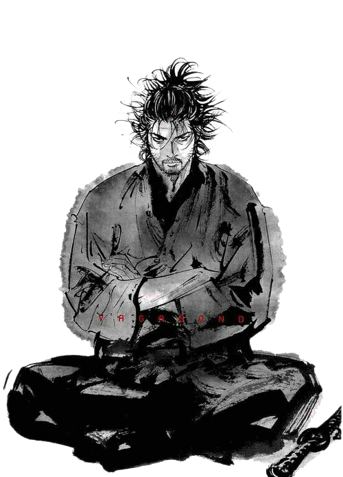

.png)
“ There is nothing outside of yourself that can ever enable you to get better, stronger, richer, quicker, or smarter. Everything is within. Everything exists. Seek nothing outside of yourself.”
Miyamoto Musashi (宮本 武蔵, c. 1584 – 13 June 1645),[1] also known as Shinmen Takezō, Miyamoto Bennosuke or, by his Buddhist name, Niten Dōraku,[2] was a Japanese swordsman, philosopher, strategist, writer and rōnin, who became renowned through stories of his unique double-bladed swordsmanship and undefeated record in his 61 duels (next is 33 by Itō Ittōsai). Musashi, as he was often simply known, is considered a Kensei, a sword-saint of Japan.[3] He was the founder of the Niten Ichi-ryū, or Nito Ichi-ryū, style of swordsmanship, and in his final years authored The Book of Five Rings (五輪の書, Go Rin No Sho) and Dokkōdō (獨行道, The Path of Aloneness). Both documents were given to Terao Magonojō, the most important of Musashi's students, seven days before Musashi's death. The Book of Five Rings deals primarily with the character of his Niten Ichi-ryū school in a concrete sense, i.e., his own practical martial art and its generic significance; The Path of Aloneness, on the other hand, deals with the ideas that lie behind it, as well as his life's philosophy in a few short aphoristic sentences. The Miyamoto Musashi Budokan training center, located in Ōhara-chō (Mimasaka), Okayama prefecture, Japan was erected to honor his name and legend.
Musashi created and refined a two-sword kenjutsu technique called niten'ichi (二天一, "two heavens as one") or nitōichi (二刀一, "two swords as one") or 'Niten Ichi-ryū' (A Kongen Buddhist Sutra refers to the two heavens as the two guardians of Buddha). In this technique, the swordsman uses both a large sword, and a "companion sword" at the same time, i.e. a katana with a wakizashi.[28] The two-handed movements of temple drummers may have inspired him, although it could be that the technique was forged through Musashi's combat experience. Jutte techniques were taught to him by his father—the jutte was often used in battle paired with a sword; the jutte would parry and neutralize the weapon of the enemy while the sword struck or the practitioner grappled with the enemy. Today Musashi's style of swordsmanship is known as Hyōhō Niten Ichi-ryū.[29] Musashi was also an expert in throwing weapons. He frequently threw his short sword, and Kenji Tokitsu believes that shuriken methods for the wakizashi were the Niten Ichi Ryu's secret techniques.[30] Musashi spent many years studying Buddhism and swordsmanship. He was an accomplished artist, sculptor, and calligrapher. Records also show that he had architectural skills. Also, he seems to have had a rather straightforward approach to combat, with no additional frills or aesthetic considerations. This was probably due to his real-life combat experience; although in his later life, Musashi followed a more artistic approach. He made various Zen brush paintings, calligraphy, and sculpted wood and metal. Even in The Book of Five Rings he emphasizes that samurai should understand other professions as well. Musashi's writings were very ambiguous, and translating them into English makes them even more so; thus many different translations of The Book of Five Rings can be found.

“ There is nothing outside of yourself that can ever enable you to get better, stronger, richer, quicker, or smarter. Everything is within. Everything exists. Seek nothing outside of yourself.”
.png)